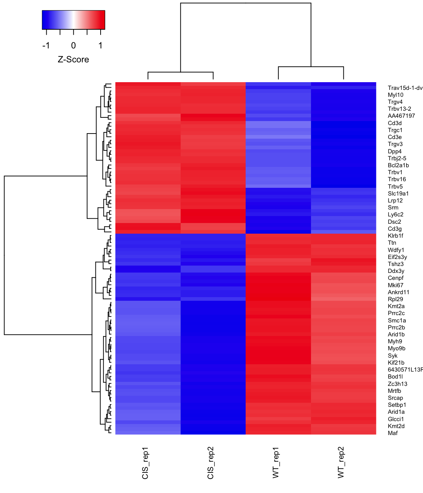
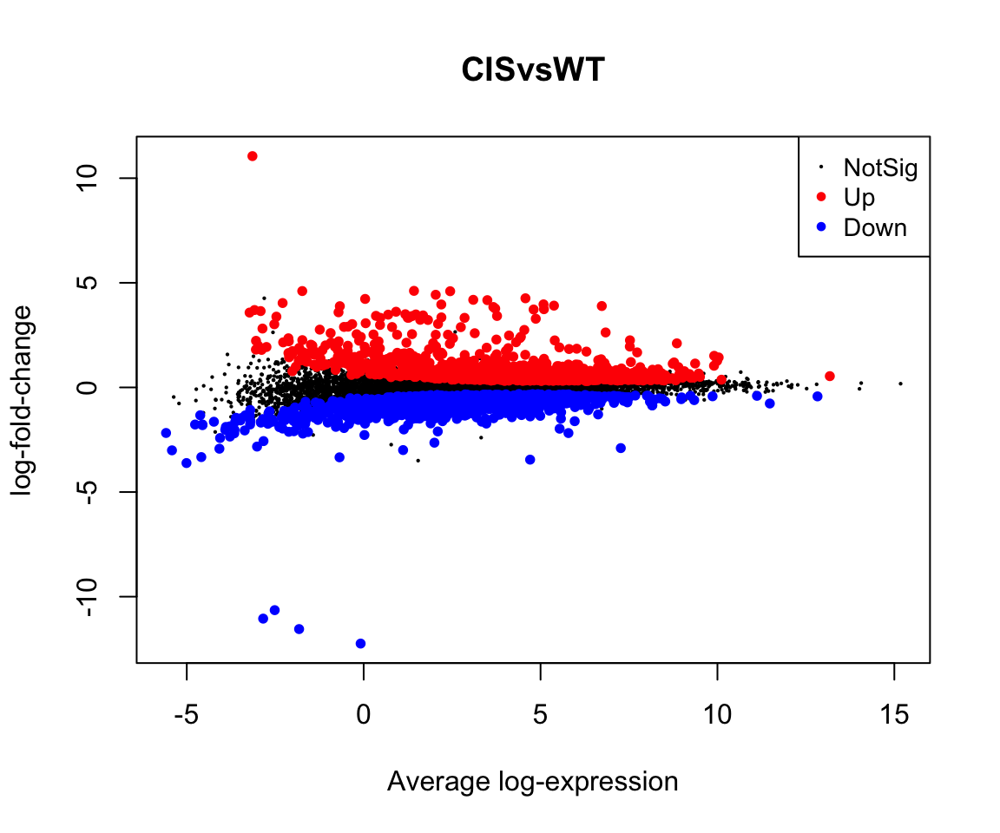
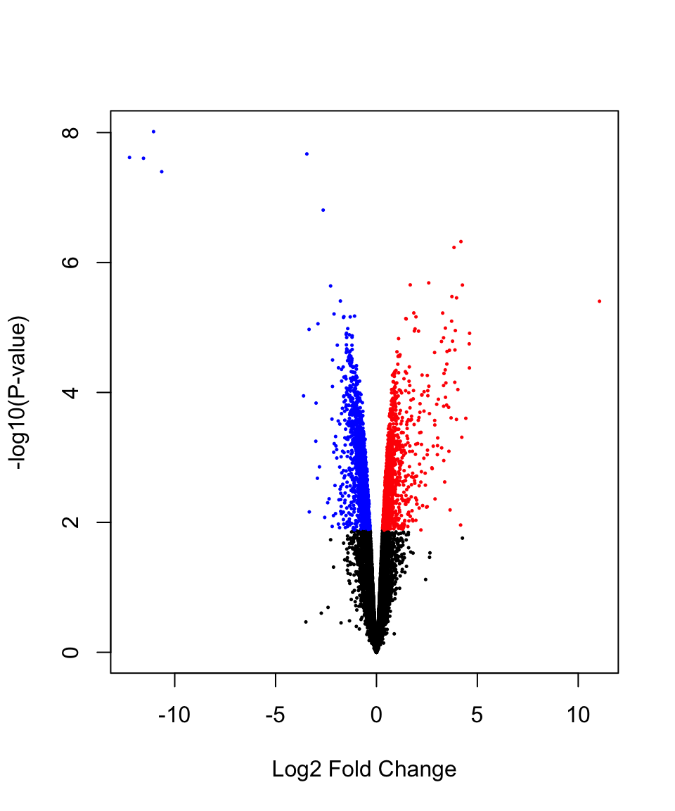
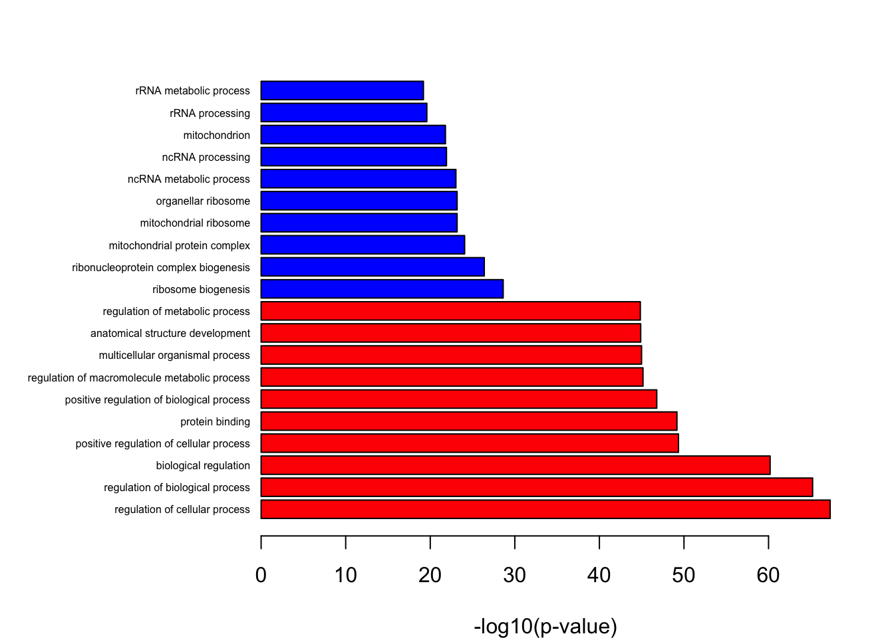

6 Downstream analysis
In this chapter we will run through a series of example downstream analyses that can be performed on the identified differentially expressed genes.
6.1 Visualisations
There are a number of ways in which you can visualise your RNA-seq data, while in this chapter we attempt to cover the most commonly ways of visualising your RNA-seq data, this is by no means exhaustive.
6.1.1 Heatmaps
Heatmaps are a great way of demonstrating the differences in the expression patterns between different conditions in your dataset. Here we use the coolmap function within the limma package which is an extension of the heatmap.2 function within the gplots package. The heatmap below shows the expression pattern of the top 100 differentially expressed genes between CIS vs WT.
#load the required package
library(limma)
load("Counts.rdata")
load("DE_results.RData")
heat.data <- y$E[head(rownames(de.genes), n = 100), ]
colnames(heat.data) <- targets$Sample
rownames(heat.data) <- head(de.genes$Symbol, n = 100)
coolmap(
heat.data,
margin = c(5, 4),
cexCol = 0.8,
lhei = c(0.8, 4),
cexRow = 0.6
)
6.1.2 Mean-difference plot
A mean-difference plot or MD-plot is a plot that can be used to show the fold-change differences against the average expression values of all genes used in the analysis. This can be generated easily using the plotMD function within the limma package.

6.1.3 Volcano plot
A volcano plot shows the relationship between the log fold-change on the x-axis and a measure of statistical significance on the y-axis. The measure of significance can be -log(p-value) or the B-statistics. Here, we will use the volcanoplot function within the limma package.In the volcano plot below, differentially expressed genes are highlighted with red for up-regulated and blue for down-regulated genes.
#highlight de genes
col<-c("blue","black","red")[factor(dt[,"CISvsWT"])]
volcanoplot(fit.contr,col=col)
6.2 Gene Ontology (GO) and KEGG enrichment analysis
6.2.1 Gene Ontology
Gene ontology (http://www.geneontology.org/) provides a controlled vocabulary for describing biological processes (BP ontology), molecular functions (MF ontology) and cellular components (CC ontology).
The GO ontologies themselves are organism-independent; terms are associated with genes for a specific organism through direct experimentation or through sequence homology with another organism and its GO annotation.
Terms are related to other terms through parent-child relationships in a directed acylic graph.
You can use enrichment analysis as another way of drawing conclusions from your set of differentially expressed genes.
Here, we use the goana function within the limma package to test for enrichment of differentially expressed genes between the CIS vs WT. Note that the p-values returned by goana are unadjusted for multiple testing. It is therfore, advisable that if the results are to be published, only terms with very small p-values should be included. For instance, in the example below, only terms with a p-value < 10^{-5} are retained.
if(!requireNamespace("GO.db"))
BiocManager::install("GO.db")
library(GO.db)
go.rst<-goana(fit.contr,coef = 1,FDR = 0.05,species="Mm")
#order enriched terms by p-value
go.rst<-go.rst[with(go.rst,P.Up<enrich.pvalue|P.Down<enrich.pvalue),]
go.rst<-topGO(go.rst,number = Inf)
topGO(go.rst)## Term Ont N Up
## GO:0050794 regulation of cellular process BP 6084 593
## GO:0050789 regulation of biological process BP 6343 628
## GO:0065007 biological regulation BP 6647 675
## GO:0048522 positive regulation of cellular process BP 3439 335
## GO:0005515 protein binding MF 5634 584
## GO:0048518 positive regulation of biological process BP 3697 368
## GO:0060255 regulation of macromolecule metabolic process BP 3917 361
## GO:0032501 multicellular organismal process BP 3570 335
## GO:0048856 anatomical structure development BP 3061 287
## GO:0019222 regulation of metabolic process BP 4221 404
## GO:0005488 binding MF 7993 876
## GO:0032502 developmental process BP 3334 319
## GO:0031323 regulation of cellular metabolic process BP 3857 361
## GO:0048731 system development BP 2484 228
## GO:0007275 multicellular organism development BP 2804 261
## GO:0016043 cellular component organization BP 3824 409
## GO:0006996 organelle organization BP 2732 266
## GO:0010604 positive regulation of macromolecule metabolic process BP 2214 224
## GO:0051171 regulation of nitrogen compound metabolic process BP 3590 321
## GO:0080090 regulation of primary metabolic process BP 3689 332
## Down P.Up P.Down
## GO:0050794 1177 1 5.2e-68
## GO:0050789 1206 1 6.1e-66
## GO:0065007 1233 1 6.5e-61
## GO:0048522 746 1 4.5e-50
## GO:0005515 1069 1 6.7e-50
## GO:0048518 779 1 1.6e-47
## GO:0060255 808 1 7.0e-46
## GO:0032501 754 1 1.0e-45
## GO:0048856 673 1 1.3e-45
## GO:0019222 853 1 1.4e-45
## GO:0005488 1360 1 1.5e-45
## GO:0032502 716 1 2.1e-45
## GO:0031323 796 1 6.2e-45
## GO:0048731 575 1 1.4e-44
## GO:0007275 628 1 1.7e-44
## GO:0016043 789 1 2.7e-44
## GO:0006996 607 1 2.5e-41
## GO:0010604 518 1 1.4e-40
## GO:0051171 738 1 1.8e-39
## GO:0080090 753 1 2.2e-39A simple way to visualise the enrichment results is through a bar plot as shown below which shows the top 10 enriched terms
top.up <- head(go.rst[order(go.rst$P.Up, decreasing = F), ], n = 10)
top.down <- head(go.rst[order(go.rst$P.Down, decreasing = F), ], n = 10)
bar.data <-
rbind(
data.frame(
Term = top.up$Term,
P.value = top.up$P.Up,
Dir = "up"
),
data.frame(
Term = top.down$Term,
P.value = top.down$P.Down,
Dir = "down"
)
)
bar.data <- bar.data[order(bar.data$P.value, decreasing = F), ]
par(mai = c(0.8, 2, 0.5, 0.5))
bb<-barplot(
-log10(bar.data$P.value),
horiz = T,
xlab = " -log10(p-value)",
cex.names = 0.5,
col = c("red","blue")[factor(bar.data$Dir)]
)
axis(2,line = -0.8,at=bb,labels = bar.data$Term,tick = F,las=2,cex.axis=0.5)
Add gene information (optional)
Sometimes you may want to know what genes are enriched in each of the terms, this section allows you to add gene details.
library(org.Mm.eg.db)
go.EntrezID <- as.list(org.Mm.egGO2ALLEGS)
go.rst <- tibble::rownames_to_column(go.rst, var = "GO.ID")
#Add gene details
go.rst$Genes.Up <- unlist(lapply(go.rst$GO.ID, function(x) {
xx <- go.EntrezID[[x]]
if (is.null(xx) |
with(go.rst[go.rst$GO.ID == x,], Up == 0 |
P.Up > enrich.pvalue))
return("-")
x <- rownames(dt[rownames(dt) %in% xx & dt == 1,])
x <-
paste0(with(fit.contr$genes, Symbol[EntrezID %in% xx]), collapse = "|")
return(x)
}))
go.rst$Genes.Down <- unlist(lapply(go.rst$GO.ID, function(x) {
xx <- go.EntrezID[[x]]
if (is.null(xx) |
with(go.rst[go.rst$GO.ID == x,], Down == 0 |
P.Down > enrich.pvalue))
return("-")
x <- rownames(dt[rownames(dt) %in% xx & dt == -1,])
x <-
paste0(with(fit.contr$genes, Symbol[EntrezID %in% xx]), collapse = "|")
return(x)
}))